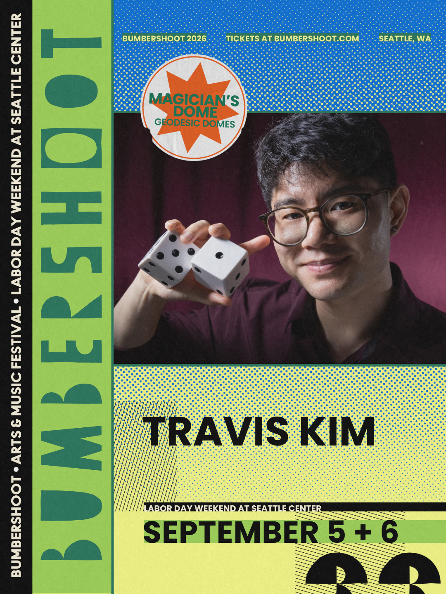
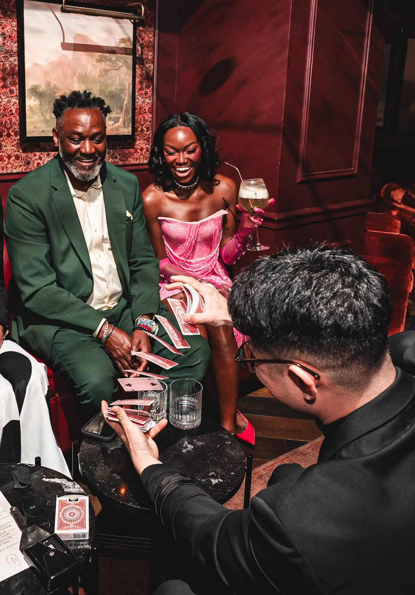

CURATED FOR EVERY OCCASSION
Interactive magic that brings guests together and leaves lasting impressions.


TRUSTED BY CLIENTS.
Recognized by Peers.
As the resident magician at Haunted Soirée Seattle and a headliner at the world-famous Magic Castle in Hollywood, Travis blends world-class sleight of hand with humor and charm, leaving guests amazed, engaged, and talking long after the event ends.
Every performance is tailored to your event, creating interactive moments that feel personal, effortless, and impossible to forget.
★★★★★ "People are still raving about him! He read the audience well, engaged everyone, and his close-up skills are truly impressive. He knows how to banter, and keep the energy flowing, and can work easy with a diverse group." - Card Kingdom, Seattle
THE EXPERIENCE
More Than Magic. Genuine Connection.
Close-up magic designed to bring people together and create moments that last.

Magic isn't performed at your guests. It's shared with them through conversation, humor, and unforgettable interactions that naturally bring people together.

Every performance is thoughtfully tailored to your venue, audience, and celebration, creating an experience that feels seamless, personal, and perfectly suited to the moment.

Long after the event ends, guests are still reliving impossible moments, sharing stories, and asking, "How did he do that?"
Featured Performer of the Magic Castle
The Magic Castle in Hollywood is widely considered as the most prestigious venue in magic. Travis has been invited to headline in the Castle’s legendary Close-Up Gallery, performing intimate sleight-of-hand magic for audiences from around the world.


Upcoming Performance:
Bumbershoot 2026
Labor Day Weekend • Seattle Center
One of Seattle's most iconic arts and music festivals, Bumbershoot has showcased world-class performers for more than 50 years. Travis Kim will appear in the Magician's Dome during Bumbershoot 2026, bringing his signature blend of sleight-of-hand, comedy, and audience participation to festival-goers throughout Labor Day Weekend.
Featured Performance:
Voilà (Seattle)
Invited by touring act Voilà to perform at their Seattle stop, Travis entertained both the audience and the performers backstage.
After working with magicians across their tour, they shared:
“Best magician we’ve seen yet.”


Seattle Residency:
Haunted Soirée
Travis has returned as Seattle’s resident magician for House of Spirits: Haunted Soirée for four consecutive years.
Combining sleight-of-hand with immersive theater, he brings to life audience-favorite characters like Howard the Coward and Craven the Conjurer, performing for hundreds of guests each night in a fully immersive theatrical experience.
What People Are Saying
Moments of Magic
Frequently Asked Questions

🎉 What types of events do you perform at?
I perform at corporate events, weddings, private parties, holiday celebrations, and special occasions throughout Seattle and the Pacific Northwest.
My most popular offerings are:
- Close-up strolling magic (1-3 hours)
- Optional grand finale for the entire room
- Interactive parlor shows (hour long)
- Trade shows, vendor booths, festivals, and public events
Every performance is customized to fit your event and audience!
📅 How far in advance should I book?
The earlier the better, especially for weekends and holiday dates. However, I can occasionally accommodate last-minute bookings. Check availability today!
✈️ Do you travel outside Seattle?
Yes. I regularly perform throughout the greater Seattle area and am available for select events throughout Washington and beyond.
👨👩👧👦 Are your performances family-friendly?
Yes. My magic is suitable for all ages and can be tailored to both family and corporate audiences.
I do not specialize in children's magic entertainment.